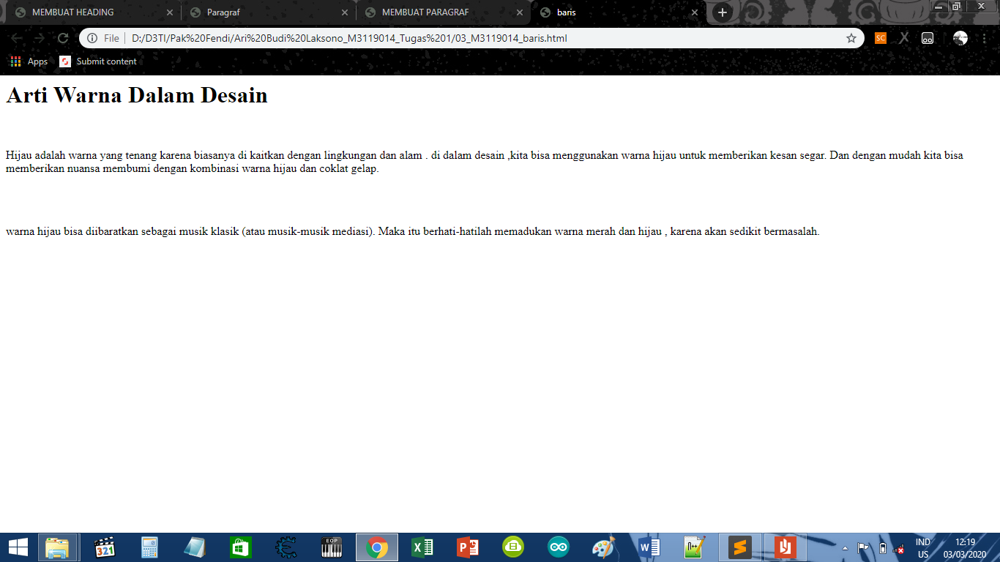

Membuat Komentar
KODE PROGRAM
</html><DOCTYPE html>
<html>
<head>
<meta charset="UTF-8">
<title>Komentar</title>
</head>
<body>
<h1>Arti Warna Dalam Desain</h1>
<br />
<!-- ini adalah paragraf pertama -->
<p>
Hijau adalah warna yang tenang karena biasanya di kaitkan dengan lingkungan dan alam .
di dalam desain ,kita bisa menggunakan warna hijau untuk memberikan kesan segar.
Dan dengan mudah kita bisa memberikan nuansa membumi dengan kombinasi warna hijau
dan coklat gelap.
</p>
<br />
<!-- ini adalah paragraf kedua-->
<br />
<p>
warna hijau bisa diibaratkan sebagai musik klasik (atau musik-musik mediasi).
Maka itu berhati-hatilah memadukan warna merah dan hijau , karena akan sedikit bermasalah.
</p>
</body>
</html>
HASIL PROGRAM
Arti Warna Dalam Desain
Hijau adalah warna yang tenang karena biasanya di kaitkan dengan lingkungan dan alam .
di dalam desain ,kita bisa menggunakan warna hijau untuk memberikan kesan segar.
Dan dengan mudah kita bisa memberikan nuansa membumi dengan kombinasi warna hijau
dan coklat gelap.
warna hijau bisa diibaratkan sebagai musik klasik (atau musik-musik mediasi).
Maka itu berhati-hatilah memadukan warna merah dan hijau , karena akan sedikit bermasalah.
SCREENSHOT

KESIMPULAN
Dari koding di atas, Dapat disimpulkan bahwa Kita bisa menuliskan komentar disuatu html .
akan tetapi kita tidak dapat menampilkannya di web.
Kembali Ke Halaman Utama